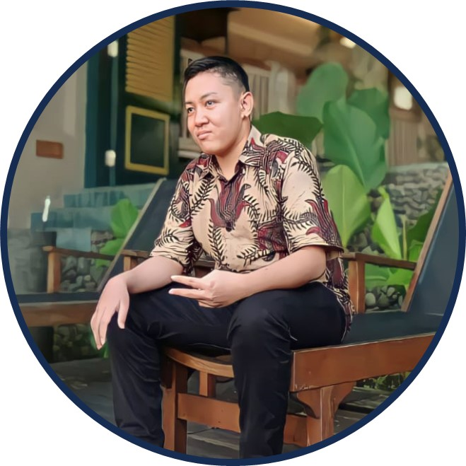

Pelajari lebih lanjut tentang pendidikan, keterampilan, dan pengalaman saya.

Halo, saya Aditya Rizki
Saya seorang teknisi komputer yang fokus pada perakitan dan instalasi komputer.
Pengamalan
SMK Saya - Belajar (2020-2023): saya banyak mempelajari tentang komputer mulai dari instalasi dan perakitan pada komputer.
It Talk Semarang - Magang (2020-2021): Saya magang sebagai teknisi dan karyawan di perusahaan tersebut.
Keterampilan
Perbaikan dan Pemeliharaan Perangkat Keras (Hardware)
Instalasi dan Konfigurasi Perangkat Lunak
perakitan komputer
Pendidikan
SDN 1 Ringinarum - Periode (2010-2016):saya Memperoleh dasar pendidikan dalam mata pelajaran utama seperti Matematika, Bahasa Indonesia, IPA, dan IPS.
SMPN 2 Gemuh - Periode (2017-2019):Saya Mendalami ilmu pengetahuan di berbagai bidang, termasuk Matematika, IPA, Bahasa Inggris, dan Seni.
SMK BINA UTAMA Kendal - Periode (2020-2023):Saya Mendalami keahlian teknis di bidang komputer, seperti Instalasi dan konfigurasi perangkat jaringan, troubleshooting hardware dan software, pengelolaan server, dll..